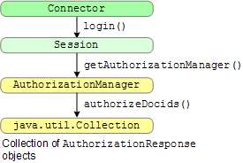

Google Search Appliance software versions 6.2
Connector manager version 2.4.0
Posted December 2009
Authorization determines if a user can view controlled-access documents in a content management system. After a user is successfully authenticated, the connector determines what documents the content management system authorizes the user to view. For connector terminology definitions, see the Google Enterprise Glossary. For information on controlled-access content, see Managing Search for Controlled-Access Content.
This section describes how to authorize users for viewing secure documents in a connector. The Javadoc for the SPI is available in open source. For additional information, see Understanding Authentication and Authorization.
Chapters: About This Guide, Introduction, Getting Started, SPI Overview, Traversing Documents,
Authentication, Authorization, Configuration, Appendix A: Building a Debug Connector Manager
A connector works with a content management system to authorize users to view controlled-access documents. Authorization in a connector uses the AuthorizationManager interface.
The following illustration shows the authorization functions:

The process is as follows:
login method in the Connector interface returns the Session object.Session object contains a call to the getAuthorizationManager method. getAuthorizationManager method provides the authorizeDocids method, which returns a collection of AuthorizationResponse objects. This collection contains the documents that the user has permission to view. The AuthorizationManager interface is called after successful authentication of the search user. When the connector manager calls the AuthorizationManager interface, the search appliance has already obtained a user’s identity in the format appropriate to the security system on the content management system. The connector manager passes the user’s identity to the AuthorizationManager.
In version 5.2, Kerberos enables client and server applications to perform mutual authentication for the duration of a user's login session. The Google Search Appliance can use Kerberos authentication to confirm a user's right to view controlled-access documents.
When a user starts a search and Kerberos is enabled on a search appliance, if the search results contain content that was acquired from a connector, the search appliance passes a verified user identity to the connector manager for subsequent authorization. The connector manager then passes the user identity to all connector instances as username@domain.
The content management system's web client with which a user interacts does not have to support Kerberos; however, the user's identity obtained by the search appliance has to match the user login on the content management system.
Use of Kerberos depends on whether or not a connector implements this feature. The connector manager supports Kerberos, but a connector has to support the authorization of documents using the supplied username@domain.
Content management systems can authorize user access to documents in batches (multiple documents at a time), or individually for each document.
If a content management system can authorize batches of documents, the connector manager can provide access to batch authorization in the AuthorizationManager.authorizeDocids method.
The authorization models are as follows:
Note: Even if a content management system provides a content feed, you may still choose to provide a connector for traversal if the search appliance cannot easily determine the content on a page. This occurs when a page contains so much Javascript, Flash code, or other code that a search appliance cannot effectively read the documents that it needs to index.
The following illustration shows how batch (connector manager) authorization occurs for search requests.
When a search occurs:
The time that a batch authorization request can take to complete depends on a number of factors:
The minimum time is at least six seconds when the search appliance first connects to the connector manager servlet container. Thereafter, the connector manager does not impose timeouts on authorization requests; however requests taking longer than five minutes can be terminated by the search appliance.
The following shows a list of connector instances:
POST /connector-manager/getConnectorInstanceList HTTP/1.1
User-Agent: Jakarta Commons-HttpClient/3.0.1
Host: cm.example.com:8080
Content-Length: 0
Content-Type: application/xml; charset=UTF-8
HTTP/1.1 200 OK
Server: Apache-Coyote/1.1
Content-Type: text/xml;charset=ISO-8859-1
Content-Length: 372
Date: Tue, 17 Mar 2009 20:21:45 GMT
<CmResponse>
<StatusId>0</StatusId>
<ConnectorInstances>
<ConnectorInstance>
<ConnectorName>ProductionConnector</ConnectorName>
<ConnectorType>test-connector</ConnectorType>
<Status>0</Status>
<ConnectorSchedule>ProductionConnector:100:0-0</ConnectorSchedule>
</ConnectorInstance>
</ConnectorInstances>
</CmResponse>
The next example shows a sample authorization request from the search appliance to the connector manager host:
POST /connector-manager/authenticate HTTP/1.1
User-Agent: Jakarta Commons-HttpClient/3.0.1
Host: cm.example.com:8080
Content-Length: 107
Content-Type: text/xml
<AuthnRequest>
<Credentials>
<Username>pollyhedra</Username>
<Password>curious</Password>
</Credentials>
</AuthnRequest>
HTTP/1.1 200 OK
Server: Apache-Coyote/1.1
Content-Type: text/xml;charset=UTF-8
Content-Length: 170
Date: Tue, 17 Mar 2009 20:21:45 GMT
<CmResponse>
<AuthnResponse>
<Success ConnectorName="ProductionConnector">
<Identity>pollyhedra</Identity>
</Success>
</AuthnResponse>
</CmResponse>
The next example shows a sample authorization request where the connector denies the authorization request:
POST /connector-manager/authorization HTTP/1.1
User-Agent: Jakarta Commons-HttpClient/3.0.1
Host: cm.example.com:8080
Content-Length: 5475
Content-Type: text/xml
<AuthorizationQuery>
<ConnectorQuery>
<Identity source="connector">pollyhedra</Identity>
<Resource>googleconnector://ProductionConnector.localhost/doc?docid=test1.WK48</Resource>
<Resource>googleconnector://ProductionConnector.localhost/doc?docid=test2.WK48</Resource>
</ConnectorQuery>
</AuthorizationQuery>
HTTP/1.1 200 OK
Server: Apache-Coyote/1.1
Content-Type: text/xml;charset=UTF-8
Transfer-Encoding: chunked
Date: Tue, 17 Mar 2009 20:21:46 GMT
2000
<CmResponse>
<AuthorizationResponse>
<Answer>
<Resource>googleconnector://ProductionConnector.localhost/doc?docid=test1.WK48</Resource>
<Decision>Deny</Decision>
</Answer>
<Answer>
<Resource>googleconnector://ProductionConnector.localhost/doc?docid=test2.WK48</Resource>
<Decision>Deny</Decision>
</Answer>
</AuthorizationResponse>
<StatusId>0</StatusId>
</CmResponse>
0
Note: Neither the connector manager SPI nor the search appliance requires Deny responses for authorization. An indeterminate answer is assumed, which amounts to a denial.
Connector manager authorization and web authorization differ by whether you are using the connector manager for authorization. If a content management system can authorize more than one document at a time, then the search appliance uses the connector manager to communicate with the content management system and determine what search results a user can see. Otherwise, for web authorization, the search appliance does not use the connector manager and goes straight to the content management system's web client and requests authorization from the content management system for each document.
Note: Because the connector manager can authorize multiple documents, connector manager authorization (batch authorization) has the best performance.
The following example shows the authorizeDocids method that the connector manager calls to authorize documents from a content management system. In this example, the method returns authorization information for a list of document identifiers.
The createClient call gets a Livelink client that impersonates the search user.
The Iterator processes the incoming document IDs in batches of 1000,
due to a SQL query size limitation.
The client.executeSqlQuery call runs a SQL query that filters a list of DataIDs against the WebNodes documents table and returns only those rows whose permissions (in PermID) grant access to the impersonated user. The results table contains only the data IDs that the impersonated user is allowed to view. The results are added to the authorized set that will be returned in the last for loop.
public List authorizeDocids(Collection docids,
AuthenticationIdentity identity)
throws RepositoryException {
Client client = clientFactory.createClient();
client.ImpersonateUser(identity.getUsername());
// The authorized subset of docids to return.
ArrayList authorized = new ArrayList();
Iterator iterator = docids.iterator();
String query;
while ((query = buildDocidQuery(iterator)) != null) {
ClientValue results = client.executeSqlQuery(query);
for (int i = 0; i < results.size(); i++) {
String docId = results.toString(i, "DataID");
authorized.add(new AuthorizationResponse(true, docId));
}
}
return authorized;
}
The next section builds a SQL query that filters a list of document IDs
against the WebNodes documents table. The supplied
Iterator iterates over the list of docIds that was
supplied to the authorizeDocids method and constructs a
SQL query component that contains a subset of that list.
private String buildDocidQuery(Iterator iterator) {
if (!iterator.hasNext())
return null;
StringBuffer query = new StringBuffer();
query.append("select (DataID, PermID) from WebNodes ");
query.append("where DataID in (");
// Add a list of up to 1000 docids to the query.
// (The maximum size of a list in a SQL query is 1000.)
for (int i = 0; i < 1000 && iterator.hasNext(); i++ ) {
query.append((String) iterator.next()).append(',');
}
// Close the list of docids with a ')',
// then return the query.
query.setCharAt(query.length() - 1, ')');
return query.toString();
}
}